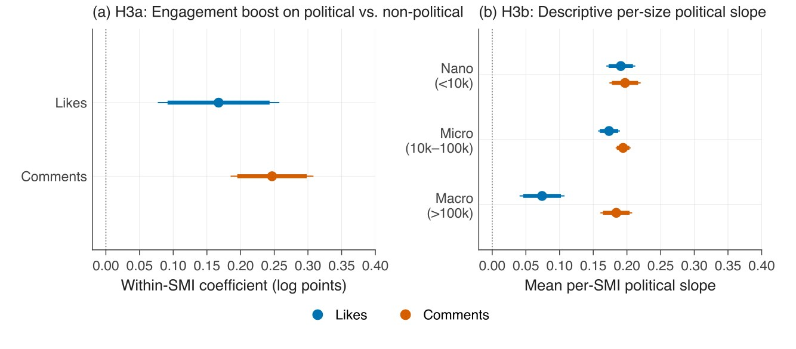
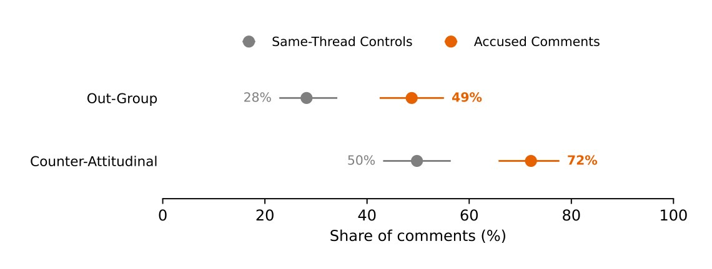
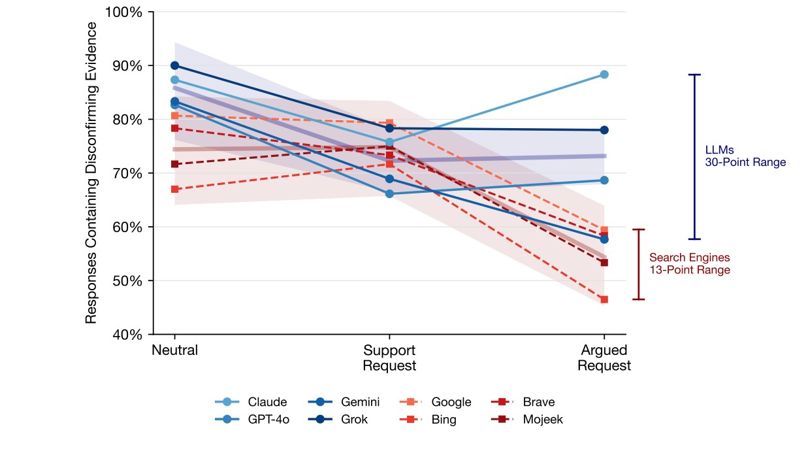
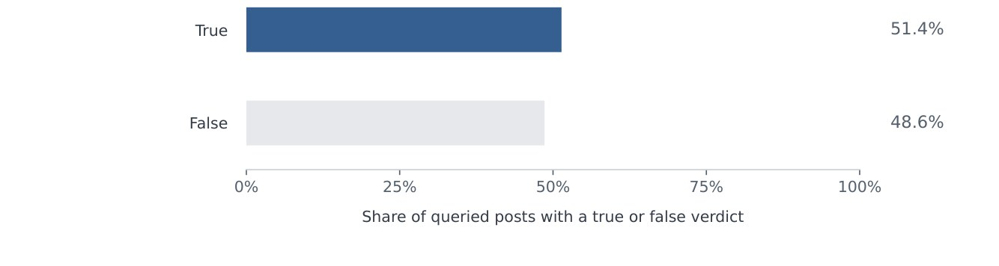
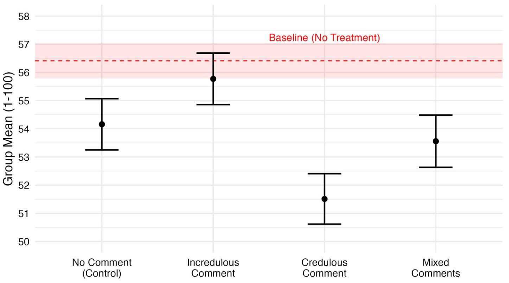

I am a Postdoctoral Scholar in the University of Zurich's Department of Communication & Media Research (IKMZ). My research is focused on understanding how digital technologies are used to influence the public. This includes research into novel forms of political persuasion, such as disinformation and LLM-generated propaganda, as well as work developing interventions to mitigate their impact. My work draws on mixed and computational methods, including algorithmic auditing, machine learning–assisted classification, large-n text analysis, and survey and field experiments, with research projects spanning the United States, Europe, and sub-Saharan Africa.
Previously, I was a Research Assistant Professor at Clemson University's Media Forensics Hub. I received my PhD from the University of Washington. I am the consulting scientist for the International Panel on the Information Environment (IPIE)'s Indexing Panel, an affiliate of the Center for Information, Technology, and Public Life (CITAP), and a member of both the Coalition for Independent Technology Research (CITR) and DSI Digital Publics communities.
Some social media influencers (SMIs) occasionally discuss political actors and events, while others regularly engage with political topics. We ask here whether audience response helps explain this difference. We argue that engagement with political posts provides feedback that can reinforce further political posting and, over time, a move toward formal-political content. We test this argument using 761,102 Instagram posts from 1,683 Austrian and German SMIs collected over 60 months (2021–2025), combining a validated two-stage text classification pipeline with within-creator fixed-effects regressions and Cox proportional-hazards models. Political posts receive 18% more likes and 28% more comments than non-political posts by the same creator, although this boost is not larger for smaller creators. A better-performing first political post is followed sooner by another political post. Stronger engagement with lifestyle-political posts also predicts an earlier move into formal-political content, with implications for democracy given the increasing prominence of SMIs as agenda-setters in digital ecosystems. Smaller creators post political content at higher rates. Audience response therefore helps explain why political communication by SMIs persists and how it can move toward formal politics.

It is becoming increasingly common to encounter AI-generated text online. Yet at the same time it is often difficult to distinguish authentic text from generative outputs, particularly within shorter posts. Given this conflict, we expect accusations that a text was AI-generated to become a common strategy for deflecting unwelcome arguments. To study the occurrence of these accusations and their impact on online discourse, we draw on posts collected across two years and twelve political Reddit communities to track who is accused, whether accused comments are flagged by detection tools as AI more often, and whether these accusations disproportionately disrupt debates. Consistent with research on motivated reasoning, accusers from across the political spectrum targeted comments which opposed their views at higher rates, 72% of the time against 50% for comparable same-thread comments. AI accusations also disproportionately undermined open debate. Compared to other types of hostile dismissals, we find that substantive engagement falls to 29% (from 67%), with threads often turning to the litigation of a posts' authenticity rather than engaging with its substance. These findings illustrate the growing tendency to indict political opponents as inauthentic, which we call the motivated attribution of inauthenticity, while illustrating how the existence of generative AI can harm political conversations through suspicion alone.

Does the evidence generated to answer political questions depend on which large language model (LLM) users query? We introduce the concept of “biased provision” to describe this dependence, which can arise where individual providers differ in how compliant their models are to user requests. Drawing on an audit of four LLMs, four search engines, and two hybrids across 8,249 responses to 30 claims, we find similar average rates of disconfirming evidence, evidence against the claim asked about, across system types but larger differences among LLMs. As further evidence of their unique behavior, all four LLMs answered neutral questions with similar evidence but diverged once users asked for support, whereas search engines narrowed together only after queries included the user's argument. Search engines supplied the least disconfirming evidence under argued requests, providing a baseline for claims of chatbot sycophancy. As political questions migrate from search engines to chatbots, the evidence users receive will no longer depend on the tools people use but on which chatbot's answers users prefer.

Misperceptions can run in two directions. Individuals can either believe false information or reject true information, with experimental work finding that debunking efforts are effective at correcting both forms of misperception. Yet despite the efficacy of true corrections, current debunking systems focus almost entirely on the correction of falsehoods, with professional fact-checkers publishing few true verdicts and crowdsourced systems like X's Community Notes program unable, by rule, to display notes verifying true claims. As a result, we do not have a clear understanding of the extent to which overall misperceptions are driven by doubting true information. To answer this question we first draw on a novel dataset of 47,899 queries to X's AI assistant which track users asking for verification on post content. Surprisingly, among questioned posts that received a true or false verdict, Grok judged nearly identical shares as either accurate or inaccurate. Of the questioned posts, more than 83% were not flagged by Community Notes and only 3.3% carried a displayed note. Among questioned posts judged accurate by Grok, nearly 90% received no note at all while fewer than 2% displayed a note flagging them as misleading. This discrepancy does not seem to have stemmed from a lack of effort, with contributors writing 2,981 notes verifying questioned posts despite there being no way for Community Notes to display them publicly. Alongside further exploration of these findings we discuss both the system- and code-level changes that would be required to effectively address this asymmetric correction paradigm.

Does social commentary influence the effects of political deepfakes? To answer this question, we rely on a survey experiment based in Kenya ( N = 7,000). The experiment saw respondents view a generated clip of presidential candidates discussing their role in a fabricated corruption scheme coupled with embedded comments expressing varied levels of skepticism. In line with prior work, we first show that social commentary shapes how audiences interpret media. Next, we go beyond this initial finding to examine how commentary in social environments can shape the perceived authenticity of entire videos by integrating a novel survey instrument aimed at improving the ecological validity of our experimental design. Using this instrument, we find that comments which failed to remark on the synthetic origins of the video reduced support for the politician, while skeptical comments partially restored it. Partisanship also mattered, as respondents more readily dismissed deepfakes targeting candidates they supported compared to opposing candidates. Our findings highlight how the social context in which users view AI-generated disinformation can reshape audience perceptions, particularly in contexts that lack sufficient resources to maintain effective moderation systems. We conclude that audience-driven “collective sensemaking” can critically alter the influence of deepfakes, introducing both challenges and opportunities for the development of countermeasures for mitigating the influence of audio-visual disinformation. Our discussion emphasizes the need for research on deepfakes and related forms of multi-modal AI-generated content to take socio-political contexts into account when considering the direction of influence and potential for harm.
